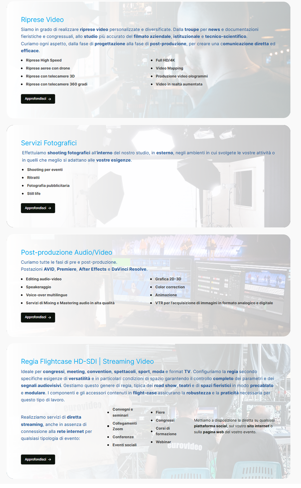
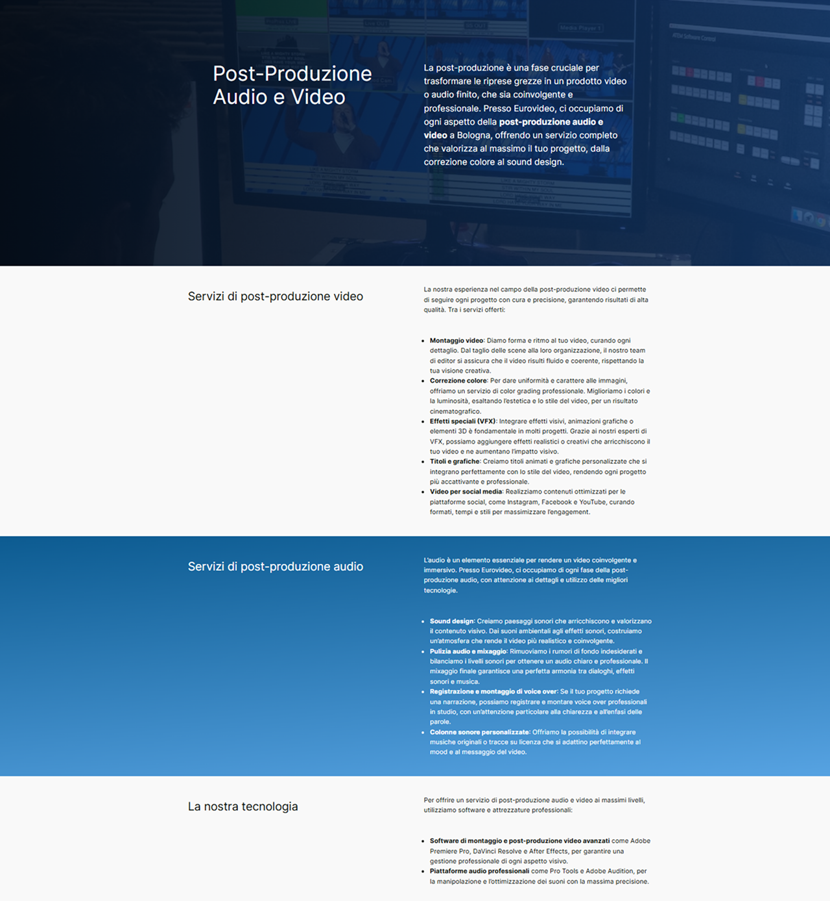
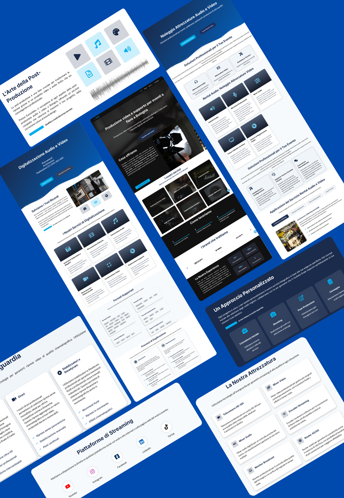

Case Study
EuroVideo
A video production company that makes other brands look their best on screen — with a website that didn't do the same for them.
Caso di Studio
EuroVideo
Un'azienda di produzione video che fa brillare gli altri brand sullo schermo — con un sito che, per loro, non faceva lo stesso.
The Brief
A business that had outgrown its own website
EuroVideo produces video for conferences, trade fairs, and events around Bologna, camera work, mobile broadcast rigs, equipment rental, and digitizing decades of analog tape. Over the years the business had grown into all of that. Its website hadn't caught up.
The old site buried EuroVideo's biggest strength, the sheer range of what they could do, under dense, unstructured text. Services blurred into each other, with no clear next step for a first-time visitor. And the page for one of their most technical offerings, audio and video post-production, read like a spec sheet rather than something a client could actually use to decide.
For a company whose entire job is making other people look professional on screen, that gap mattered.
Il Brief
Un'azienda che aveva superato il proprio sito web
EuroVideo produce video per conferenze, fiere ed eventi in tutta l'area di Bologna, riprese, regie mobili, noleggio attrezzature e digitalizzazione di decenni di nastri analogici. Nel tempo l'azienda era cresciuta fino a coprire tutto questo. Il sito web no.
Il vecchio sito nascondeva il punto di forza più grande di EuroVideo, l'ampiezza di ciò che erano in grado di fare, sotto testi densi e poco strutturati. I servizi si confondevano l'uno con l'altro, senza un passo successivo chiaro per chi visitava il sito per la prima volta. E la pagina di uno dei servizi più tecnici, la post-produzione audio e video, sembrava una scheda tecnica più che una pagina pensata per aiutare un cliente a decidere.
Per un'azienda il cui lavoro è far apparire professionali gli altri sullo schermo, quella differenza pesava.
My Role
Project manager, designer, and the person who built it
I owned this project end to end, research and stakeholder interviews, information architecture and UI, then the WordPress build and QA myself. That meant every decision, from which services deserved their own page to what a button should say when someone's ready to ask for a quote, was mine to make and live with.
I started with the business, not the screen: a look at competitor sites, and conversations with the EuroVideo team about which services actually bring in clients versus which just needed a mention. That gave me an information architecture I could commit to, six clear service areas instead of one long scroll, before a single screen got designed.
Il Mio Ruolo
Project manager, designer, e chi l'ha anche costruito
Ho seguito questo progetto dall'inizio alla fine, ricerca e interviste con gli stakeholder, architettura dell'informazione e UI, poi lo sviluppo su WordPress e il testing, in prima persona. Ogni decisione, da quali servizi meritassero una pagina propria a cosa dovesse dire un bottone quando qualcuno è pronto a chiedere un preventivo, era mia da prendere e di cui rispondere.
Sono partita dal business, non dallo schermo: un'analisi dei siti concorrenti, e conversazioni con il team di EuroVideo su quali servizi portassero davvero clienti e quali avessero solo bisogno di una menzione. Questo mi ha dato un'architettura dell'informazione su cui potevo contare — sei aree di servizio chiare invece di un unico, lunghissimo scroll, prima ancora di disegnare una singola schermata.
The Redesign
Three problems worth solving properly
01 One homepage, one job
The original homepage tried to say everything at once. I gave the new one a single job: make it obvious, in the first screen, what EuroVideo does and who it's for. One strong hero image, one clear headline, and the services condensed into scannable cards that each lead straight to their own page, visible in the homepage shot above.
02 Six services, six destinations
Instead of one page trying to hold everything, every major service line got its own landing page built on the same bones, a plain-language explanation up top, then the specifics (formats, equipment, process) for the visitor who wants them. Digitization is a good example: what used to be a single dense paragraph became a page that walks from "we save your memories" through supported formats to the duplication process itself, without ever reading like documentation.
Il Redesign
Tre problemi che valeva la pena risolvere per bene
01 Una homepage, un solo compito
La homepage originale cercava di dire tutto insieme. Alla nuova ho dato un solo compito: rendere subito chiaro, nella prima schermata, cosa fa EuroVideo e per chi. Un'immagine hero forte, un titolo chiaro, e i servizi condensati in card facili da scorrere, ognuna diretta alla propria pagina, visibile nello scatto della homepage qui sopra.
02 Sei servizi, sei destinazioni
Invece di un'unica pagina che cercava di contenere tutto, ogni linea di servizio principale ha ottenuto una propria pagina, costruita sulla stessa struttura, una spiegazione in linguaggio semplice in alto, poi i dettagli tecnici (formati, attrezzature, processo) per chi li vuole. La digitalizzazione è un buon esempio: quello che prima era un unico paragrafo denso è diventato una pagina che accompagna da "salviamo i tuoi ricordi" fino ai formati supportati e al processo di duplicazione stesso, senza mai sembrare un manuale.

03 Turning a spec sheet into a service page
The post-production page was the clearest case of a genuinely good service buried in bad formatting, a long, article-style page with no visual separation between ideas. I rebuilt it around short, scannable sections: what the service is, then the specific offerings, color correction, sound design, visual effects, as their own labeled points instead of paragraph after paragraph.
03 Da scheda tecnica a pagina di servizio
La pagina di post-produzione era il caso più evidente di un buon servizio nascosto da una formattazione sbagliata, una pagina lunga, in stile articolo, senza separazione visiva tra le idee. L'ho ricostruita attorno a sezioni brevi e facili da scorrere: cosa è il servizio, poi le offerte specifiche, color correction, sound design, effetti visivi, come punti autonomi ed etichettati, invece di un paragrafo dopo l'altro.

The Result
A site that finally explains itself
The site now has a clear shape: one homepage that sells the breadth of what EuroVideo does, and dedicated pages for each service that go as deep as a client needs without overwhelming the ones who don't.
Feedback after launch was strongly positive. The team reported more client inquiries coming through the site, and, just as telling, fewer emails asking "wait, do you also do X?" from people who'd clearly missed it on the old one.
Il Risultato
Un sito che finalmente si spiega da solo
Il sito oggi ha una forma chiara: una homepage che comunica l'ampiezza di ciò che fa EuroVideo, e pagine dedicate per ogni servizio che vanno in profondità quanto un cliente desidera, senza sovraccaricare chi non ne ha bisogno.
Il riscontro dopo il lancio è stato molto positivo. Il team ha registrato più richieste di contatto in arrivo dal sito, e, altrettanto significativo, meno email del tipo "aspetta, fate anche X?" da parte di chi, sul vecchio sito, semplicemente non l'aveva notato.

Looking Back
What I'd take further
Running this project end to end, researcher, designer, and developer, meant living with every tradeoff between what users needed, what the CMS could realistically do, and what the timeline allowed. The qualitative feedback told me the site was working; the next step I'd want is proper analytics wired in from day one, so future decisions are backed by numbers and not just instinct.
Uno Sguardo Indietro
Cosa approfondirei ulteriormente
Portare avanti questo progetto dall'inizio alla fine, come ricercatrice, designer e sviluppatrice, ha significato convivere con ogni compromesso tra ciò che serviva agli utenti, ciò che il CMS poteva realisticamente fare, e ciò che i tempi permettevano. Il riscontro qualitativo mi ha detto che il sito funzionava; il prossimo passo che vorrei fare è un'integrazione di analytics vera e propria fin dal primo giorno, così che le decisioni future si basino su numeri e non solo sull'istinto.